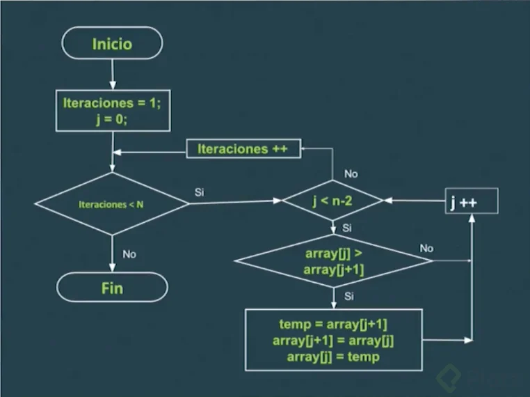
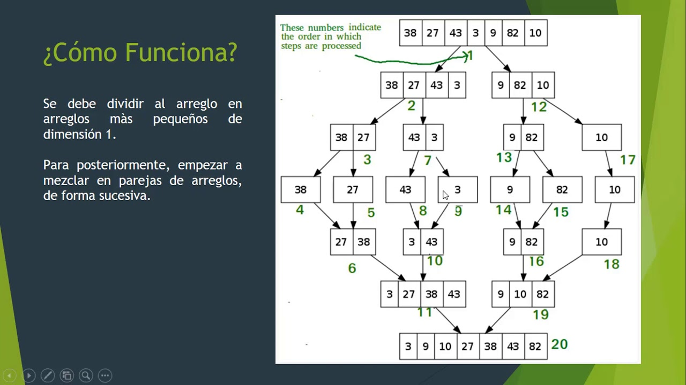
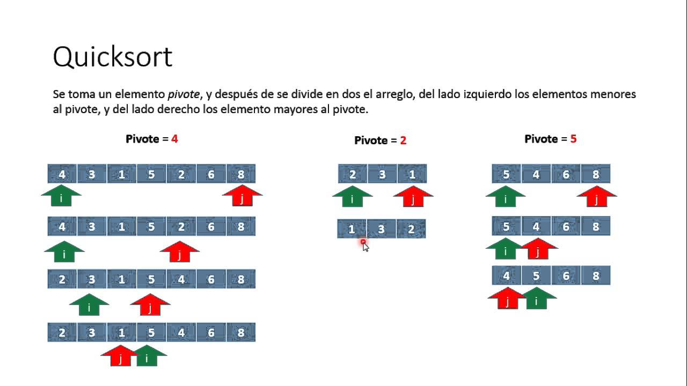

<!DOCTYPE html>
<html lang="en">
<head>
    <meta charset="UTF-8">
    <meta name="viewport" content="width=device-width, initial-scale=1.0">
    <title>Algoritmos_de_Ordenamiento</title>
</head>
<body>
    
</body>
</html>
<div>
    <p class="h6">Los algoritmos de ordenamiento son procedimientos específicos diseñados para organizar elementos en una secuencia de acuerdo con un criterio particular, como ordenar números de menor a mayor o viceversa. Estos algoritmos son fundamentales en informática y programación para optimizar la búsqueda y recuperación de datos en conjuntos ordenados, mejorando la eficiencia de las operaciones. Ejemplos comunes incluyen el algoritmo de burbuja, el de selección y el de fusión.</p>
    <p class="h6">El método de búsqueda se refiere a técnicas utilizadas para encontrar información en conjuntos de datos, ya sea en bases de datos, en la web o en otros contextos. Se aplica en diversos campos, como la informática, la inteligencia artificial, la optimización y la gestión de información.</p>
    <div class="w-25">
        
    </div>
    <p class="h6"><ul>
        <li>Burbuja (Bubble Sort): Compara y intercambia elementos adyacentes hasta que todo el conjunto esté ordenado.</li> 

            <li> Selección (Selection Sort): Encuentra repetidamente el elemento mínimo y lo coloca al principio.</li> 
        
                <li>Inserción (Insertion Sort): Construye una secuencia ordenada tomando un elemento a la vez e insertándolo en la posición correcta.</li> 
        
                    <li>Rápido (Quick Sort): Utiliza el método de dividir y conquistar, dividiendo el conjunto en subconjuntos más pequeños y ordenándolos recursivamente.</li> 
        
                        <li>Fusión (Merge Sort): Divide la secuencia en mitades, ordena cada mitad por separado y luego fusiona las mitades ordenadas.</li> 
        
                            <li>Estos algoritmos son cruciales para mejorar la eficiencia en la manipulación de datos, ya que permiten realizar búsquedas y operaciones más rápidas en estructuras de datos ordenadas. La elección del algoritmo depende de factores como el tamaño del conjunto de datos, la eficiencia esperada y los requisitos</p></li> 
                        </ul>
  </div>
            <h6 class="card-subtitle mb-2 text-body-secondary">Imagenes</h6>
            <div id="carouselExampleControls" class="carousel slide" data-bs-ride="carousel">
              <div class="carousel-inner">
                <div class="carousel-item active" data-bs-interval="3000">
                  
                </div>
  
                <div class="carousel-item" data-bs-interval="3000">
                  
                </div>
  
                <div class="carousel-item" data-bs-interval="3000">
                  
                </div>
  
              </div>
              <button class="carousel-control-prev" type="button" data-bs-target="#carouselExampleControls" data-bs-slide="prev">
                <span class="carousel-control-prev-icon" aria-hidden="true"></span>
                <span class="visually-hidden">anterior</span>
              </button>
              <button class="carousel-control-next" type="button" data-bs-target="#carouselExampleControls" data-bs-slide="next">
                <span class="carousel-control-next-icon" aria-hidden="true"></span>
                <span class="visually-hidden">siguiente</span>
              </button>
            </div>
            <p class="card-text">En conclusión, los algoritmos de ordenamiento son herramientas fundamentales en la programación y la gestión de datos. Su propósito principal es organizar elementos de manera eficiente en estructuras de datos, mejorando la velocidad de búsqueda y manipulación. La elección del algoritmo adecuado depende de factores como el tamaño del conjunto de datos y los requisitos de eficiencia del sistema. Comprender y seleccionar apropiadamente estos algoritmos es esencial para optimizar el rendimiento de las aplicaciones y garantizar una gestión eficiente de la información.</p>
          </div>
        </div>
    </body>
  </html>